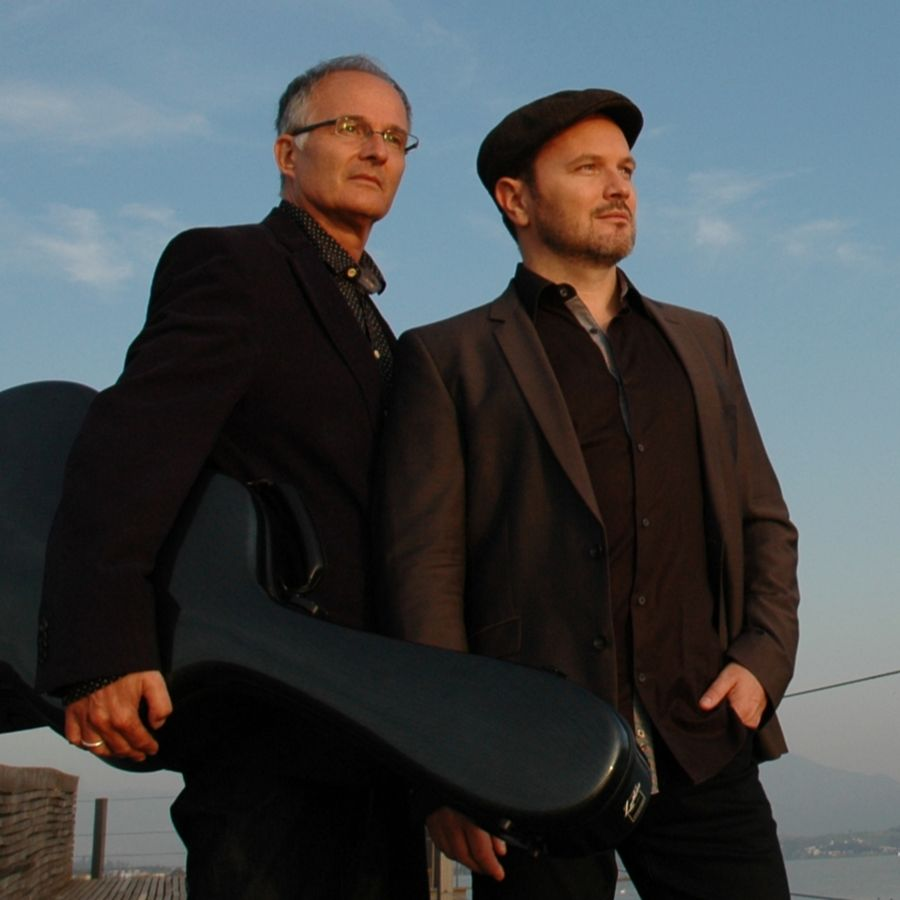
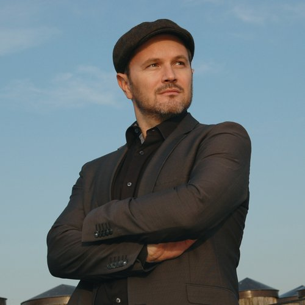
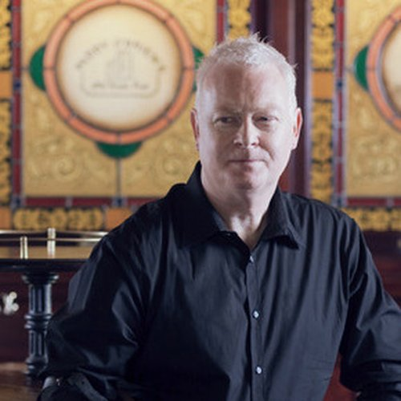
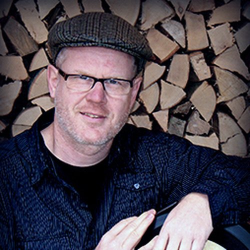
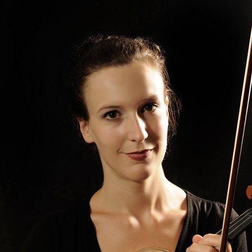

Annual Program
Not just in November: our tastings combine exceptional whiskies with live music and special moments of enjoyment all year round.
Friday 25 September 2026 · 7–10pm


Stefan Wolters opens the door to the world of independent bottlers
About two months before the Whisky & Music Festival Zürich, Stefan Wolters from Acla da Fans takes you into the fascinating world of independent bottlers. With many years in the whisky trade, he knows the stories behind the casks and the philosophy of independent bottlers inside out. What makes independent bottlers so special? Why do names like Signatory Vintage or The Whisky Agency enjoy an almost legendary reputation among connoisseurs? That's exactly where this evening begins. Six special bottlings, gripping background stories and a deep insight into the art of discovering exceptional casks. Stefan Wolters also gives a first glimpse of what Acla da Fans will present at the festival in November. The evening is rounded off with grand cru chocolate and an atmospheric concert by Andreas and Michael Winkler.
CHF 69.– per person (incl. 6 whiskies, grand cru chocolate and concert) · doors open 6:30pm, start 7pm · free seating · Volkshaus Zürich, Gelber Saal
Concert only: CHF 35.– per person
Buy TicketsFriday 30 October 2026 · 7–10pm

This exclusive top-rarities tasting offers the rare chance to experience extraordinary and extremely rare whiskies you'll hardly ever find in a glass — a true once-in-a-lifetime experience for connoisseurs and enthusiasts. The evening is accompanied by an atmospheric concert with Andreas Winkler (vocals) and Michael Winkler (guitar) — a unique blend of top-class enjoyment and live music.
These whiskies await you:
CHF 169.– per person (incl. 6 whiskies, grand cru chocolate and concert) · doors open 6:30pm, start 7pm · free seating · Volkshaus Zürich, Gelber Saal
Buy TicketsWe're happy to advise you closely and individually. We put together the whiskies for you so that they hit the taste of your guests. It matters to us that your event becomes unforgettable.
The tasting
Andreas Winkler brings his guests closer to the world of single malt Scotch whisky in an entertaining and personal way: its history and production, the importance of cask ageing and storage, the different whisky regions and distilleries, and the art of tasting a whisky mindfully. Depending on the occasion, different formats are possible — from a classic whisky tasting to a tasting with grand cru chocolate, right through to a whisky dinner with dishes carefully matched to the whiskies.
Optional: Whisky & Music with Andreas Winkler & Band
Anyone who wants to give their event an extra musical dimension can combine the whisky tasting with a live programme by Andreas Winkler & Band. Together with outstanding professional musicians, tenor Andreas Winkler sings original Scottish and Irish songs. Melancholic ballads, spirited dances and well-known melodies transport the audience to the pubs of Edinburgh, the isle of Skye or the shores of Loch Ness. Caledonia, Scotland the Brave or Loch Lomond are just a few of the melodies that bring Scotland's special atmosphere vividly to life.
Optional: Scotland impressions on screen
The whisky tasting can also be accompanied visually: with striking images from the Scottish Highlands and islands, as well as impressions of whisky, distilleries and how it's made. The images are shown on screen to match the tasting, adding an extra atmospheric dimension to the stories about Scotland and its whiskies. A projector and screen can also be provided on request.
Put together your own personal programme: whisky tasting, Scotland impressions and live music can be combined individually into the experience that best suits your event.
Book a whisky event →
Andreas Winkler and his musicians from "Whisky & Music" are devoted to the wonderful music of Scotland and Ireland. The finest ballads and songs transport the audience to the wide-open Scottish Highlands or the mystical island of Ireland. Loch Lomond, Caledonia and Danny Boy are just a few of the famous Celtic melodies in their repertoire. Their spirited, rousing jigs & reels promise a joyful mood, the kind you'd otherwise only find in the pubs of Dublin, Edinburgh or Inverness. In 2023 the band released their latest album with 14 original compositions set to texts by the Scottish national poet Robert Burns.
With or without an accompanying whisky tasting, the concert becomes an event in its own right. Andreas Winkler is a whisky expert who presents the fine drams and gives an insight into whisky culture.
Line-up:




Their 2023 album with 14 original compositions set to Robert Burns texts is available on CD for CHF 20.–.
Order CDs →More dates for 2026 to follow — subscribe to our newsletter to stay in the loop.
Back to the November Festival